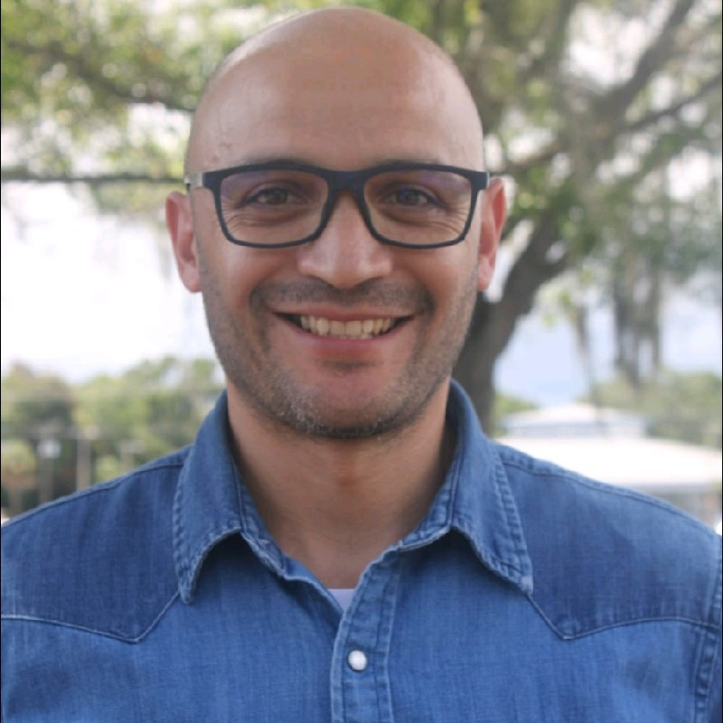
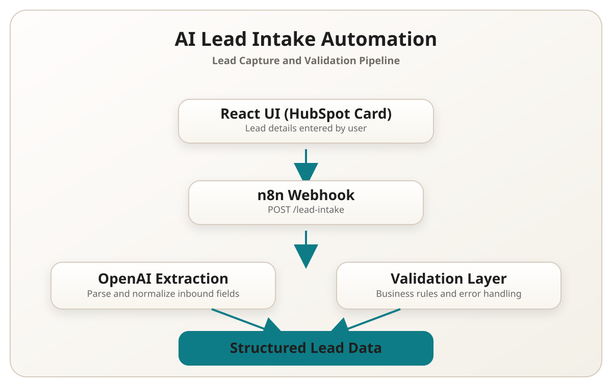
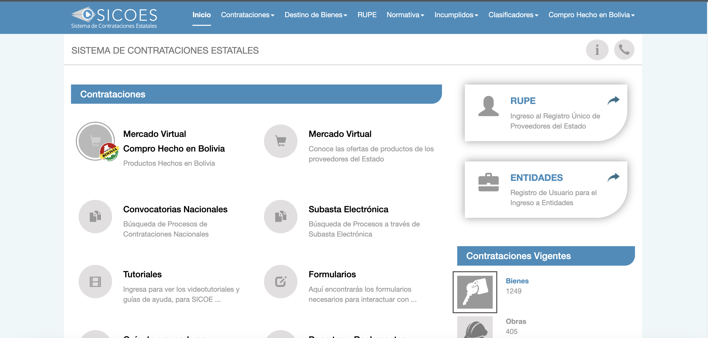
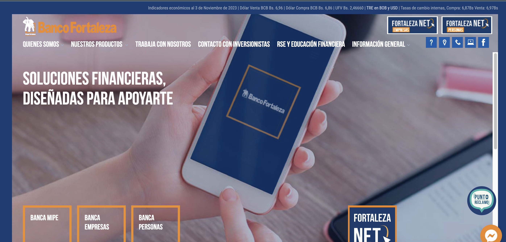
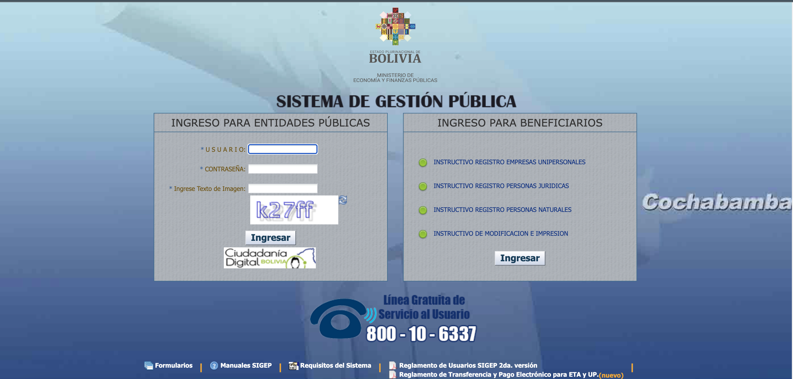
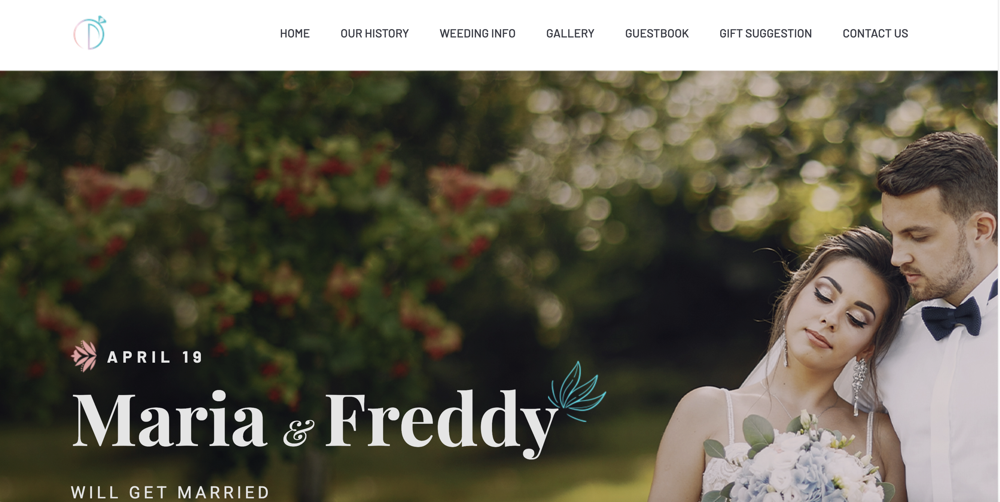
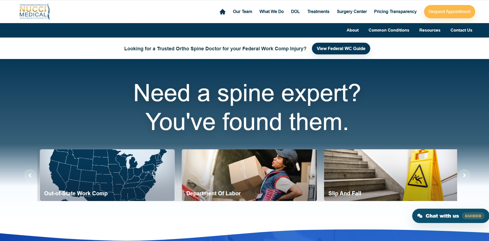

Backend Systems
Design scalable REST APIs and backend architectures using Python, Flask, and SQLAlchemy.
Backend • Automation • Full-Stack Engineer
I build backend APIs, production-ready automations, and full-stack solutions that simplify operations and create measurable business value.

What I Build
A quick view of the core problem spaces I focus on and ship in production environments.
Design scalable REST APIs and backend architectures using Python, Flask, and SQLAlchemy.
Build automation workflows and integrations using tools like n8n, APIs, and webhooks.
Develop modern web applications using React, Node.js, and clean frontend architecture.
Create AI-powered pipelines that extract structured information and automate operational processes.
Featured Project
Automation workflow that captures incoming lead data via webhook, validates inputs, processes business rules, and stores the lead while handling error scenarios gracefully.
The implementation demonstrates structured input validation, workflow automation, API integration, and production-oriented error handling.

Projects
Original portfolio projects are preserved below, with one additional backend case study card.
Backend development for a medical analytics platform designed to calculate revenue, cost, and profitability for ambulatory surgery centers.







About
I'm a systems engineer originally from Bolivia with hands-on experience building specialized applications. After relocating to the U.S., I continued expanding my skill set while staying focused on software development.
A USF Software Developer Bootcamp graduate, I enjoy building scalable, efficient solutions and actively leveraging AI-assisted development tools to accelerate delivery, improve code quality, and design modern, scalable software systems.
Curious by nature and driven by impact, I’m always learning, refining, and collaborating to deliver meaningful technology. Outside of work, I’m a proud dad, soccer enthusiast, and lifelong tech explorer.
Qualifications
University of South Florida
630 hours completed • Focus: AI for Engineers, full-stack JavaScript, Python/Flask, React, and data structures.
Rey Juan Carlos University
Advanced project planning, delivery governance, and execution discipline.
Bolivian Catholic University
Core systems engineering foundations across software, infrastructure, and analysis.
Enhanced backend architecture with new models, schemas, routes, and reusable utilities while maintaining clean documentation and Postman/Swagger testing.
Maintained secure database access to AWS RDS through SSH tunnels and Docker-based development workflows.
Supported multilingual quality operations and documented trends to improve fraud detection consistency and decision quality.
Built test cases for Marketplace web experiences, browser extensions, and mobile applications while coordinating with engineering and product teams.
Assisted with day-to-day device, network, and classroom technology issues to maintain continuity in hybrid learning environments.
Focused on high-reliability financial software support and integration work across legacy and modern components.
Handled implementation, deployment, and maintenance in a fast-moving small business context with direct stakeholder communication.
Managed cross-functional initiatives balancing uptime, scaling, and modernization in a public enterprise environment.
Balanced bug resolution, testing, and collaboration with QA to maintain release quality for workflow software platforms.
How I Build Software
RESTful services, modular route design, schema-driven validation, and maintainable backend architecture.
Stack: Python, Flask, Node.js, SQLAlchemy.
Workflow design with webhooks, event handling, validation gates, and resilient processing patterns.
Tools: n8n, APIs, business-rule orchestration.
Responsive interfaces with clean UX patterns and practical business-oriented layouts.
Stack: HTML, CSS, Bootstrap, JavaScript, React, jQuery.
Audit-driven quality mindset with testing discipline, issue triage, and cross-team collaboration.
Tools: JIRA, Confluence, Sentry, Selenium.
AI Tools
The AI chat assistant remains available for questions about skills, projects, and experience.
Playground
Live summary based on your current assumptions.